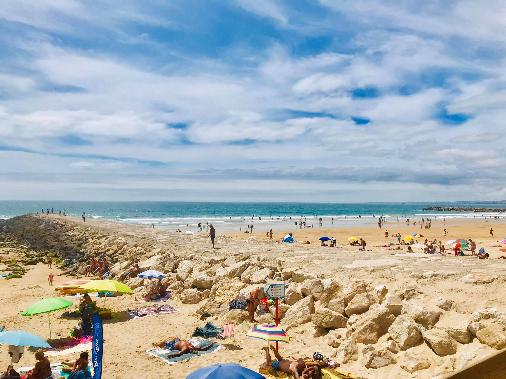
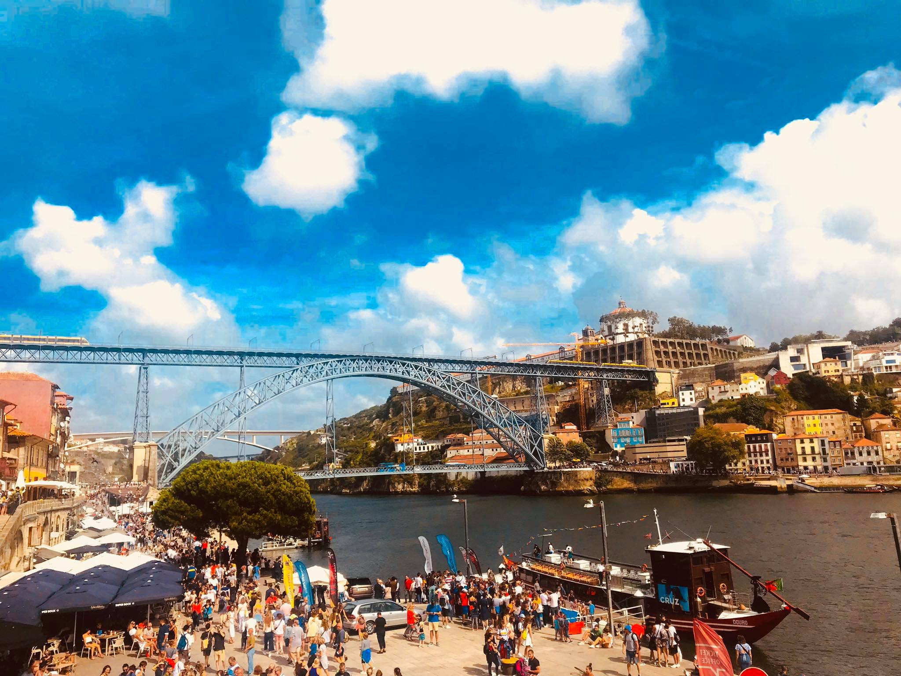
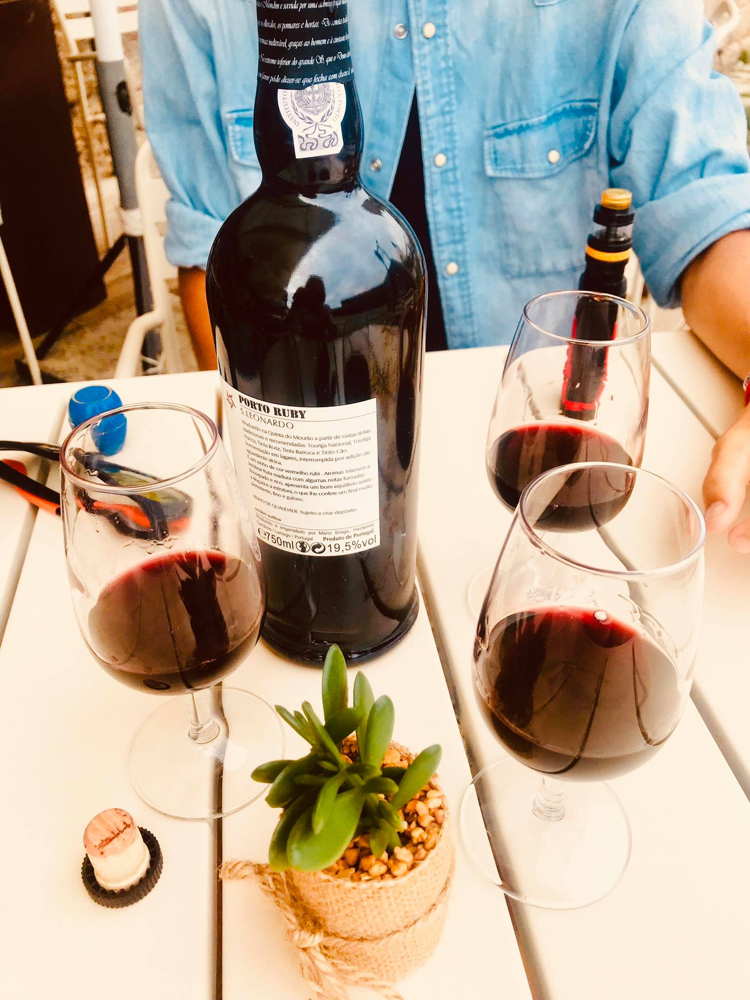
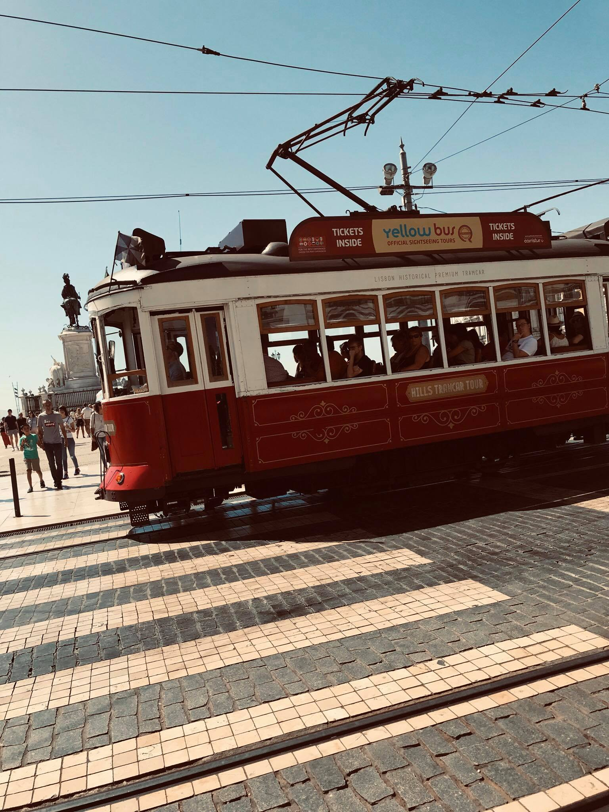
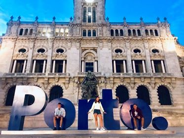
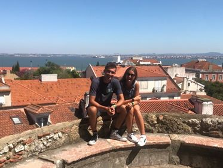

Základné info
° Hlavné mesto: Lisabon
° Počet obyvateľov Portugalska:10,5 miliónov
° Jazyk: Portugalčina
° Mena: Euro
° Hlavné mesto sa rozkladá na ústi rieky Tajo
Naše Tipy a Rady

° Prekvapia Vás veľmi nízke ceny
° Pripravte sa na premenlivejšie počasie
° Vyhnite sa hlavným sezónam a návalom turistov
° Potrebné vstupenky si zarezervujte vopred, vyhnete sa dlhému čakaniu
° Minimálny vek pre konzumáciu alkoholu je 16 rokov
° Prevezte sa magickou starodávnou električkou
° Študenti využívajte zľavy pre študentov (ISIC)
° Okoštujte národne špeciality
Naše Odporúčania


Lisabon
Castelo do Sao Jorge- najvyššie položená historická pamiatka-perfetkný výhľad
Ponte de Vasco da Gama- Najdlhší most v celej Európe-17km.
Belémska veža- obranná veža stojaca na rieke Tejo
Námestie Praca Luis de Camoes
Lisabonská socha Krista
Porto
Eiffelov most
Livraria Lello-Kníhkupectvo
Cais de Ribeira - Hlavné nábrežie
Stanica Sao Bento- Historická vlaková stanica
Clérigos Church-kostol s výhliadkou na celé mesto
Ubytovanie


V portugalsku dnes nie je žiaden problém si rezervovať ubytovanie, ktoré vyhovuje Vašim požiadavkam.
Ak preferujete súkromie určite odporúčame Airbnb.
Nájdete tu ceny všetkého druhu. Navyše získate zľavu $70 AUD na Vašu prvú cestu.
Ak ste milovníkom dobrých služieb a zabezpečenia neváhajte si objednať ubytovanie cez Booking alebo Hotels.com.
Ak Váš rozpočet nie je vysoký, nezúfajte. Je tu možnosť, kde nepotrebujete žiadne peniaze, stačí ak sa zaregistrujte prostredníctvom stránky Couchsurfing a už je na Vás čo si vyberiete.
Ako sa hovorí: Dobrých ľudí sa všade veľa zmestí :D
Zábava a atrakcie

» Bary
» Kasína
» Živá hudba
» Tanečné kluby
» Prekrásne pláže
» Grafiti všade okolo Vás
» Futbalový štadión Estadio Da Luz
» Doslova na každom kroku sú kaviarne pre milovníkov kávy
Doprava a Spoje


Lisabon a Porto ponúkajú turistom moderné klimatizované metro, ktoré premáva od 6:30 do jednej rána.
Netreba zabudnúť aj na autobusy a električky. Cena jednorázovej jazdy električkou je 1,40 EUR.
Taxiky sú lacnejši v porovnaní s ostatnými európskymi štátmi.
Významné železničné stanice v Lisabone:
Santa Apolónia
Barreiro
Rossio
Významné železničné stanice v Porte:
Sao Bento
Campanha
Užitočné frázy


Por favor-Prosím
Obrigado-Ďakujem
Adeus-Dovidenia
Desculpa-Prepáčte
Como te chamas?-Ako sa voláš?
De onde vens?-Odkiaľ pochádzaš?
Não compreendo-Nerozumiem
Fala inglês?-Hovoríte po anglicky?
Naše zábery
     
Kto teda sme ? Cestovatelia ? Študenti?

Moje meno je Miloš. Niečo o mne v skratke. Navštevujem strednú školu a po pri tom sa snažím zbierať nové skúsenosti zo sveta. Užívam si momenty na cestách, plné nových zážitkov, kamarátov a zábavy. Okrem toho sa venujem programovaniu a taktiež športu. Som otvorený novým možnostiam a rád spoznávam nových ľudí. Ak by si mal záujem sa dozvedieť niečo viac tak neváhaj a píš. Som tu pre teba vždy k dispozícií.

Ja som Monika, no takmer všetci ma volajú Mony. Síce som neprecestovala ešte veľa krajín, avšak to sa chystám čím skôr zmeniť a predsa len mám, čo to za sebou. Cestovanie milujem, pretože spoznávanie nových miest robí zo mňa svojim spôsobom lepšieho človeka a pomáha mi napredovať v živote. Najviac mi v srdci utkvel Londýn. Neviem vám vysvetliť prečo, ale toto mesto je pre mňa niečím výnimočné. Ako vždy hovorím, mysľou som stále v Anglicku, duša patrí Taliansku, no srdce vždy patrilo a aj bude Slovensku. ❤ Vo voľnom čase sa venujem fotografovaniu, umeniu, rada tvorím a mám v hlave milión nápadov. Snažím sa vidíte krásu aj tam, kde by ju človek nečakal a tešiť sa z maličkostí. Dúfam, že vy sa budete tešiť z opisu miest, ktoré som navštívila, a že vás možno aj inšpirujem. 🙈.Pokiaľ by ste chceli vidieť "behind the scenes" z mojich ciest, môžete si ich pozrieť v highlight stories u mňa na instagrame: simpson_mony 🖤

Volám sa Zuzka. Mám 19 rokov. Nesiem si zo sebou obrovské zážitky z cestovania, ktoré ma stále posúvajú napred. Vďaka cestovaniu, som mala možnosť spoznať novýh ľudí, spoznať miestnú kultúru krajín, jedlá a zvyky. Naučila som sa zodpovednosti a samozrejme som si rozšírila obzor vedomosti. Vo voľnom čase sa venujem programovaniu, posilovaniu a samozrejme foteniu.
Máš aj ty chuť cestovať a užívať si tak ako ja ? Vzdialiť sa od problému a načerpať nové sily ? Tak Si píš, že si určite budeme spolu rozumieť 👌 😉.
Sledovať má môžeš na instagrame pod menom Sue.zu😜
Teším sa na Vaše zážitky.